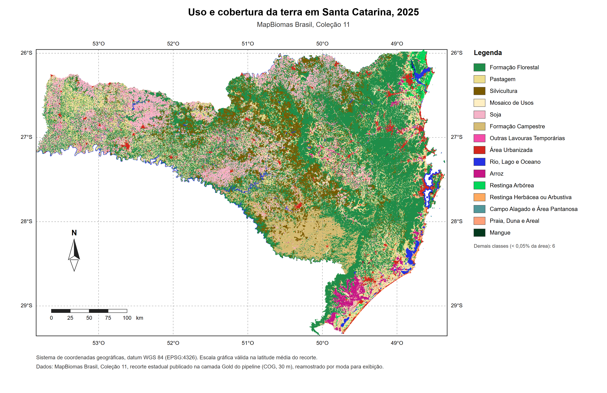
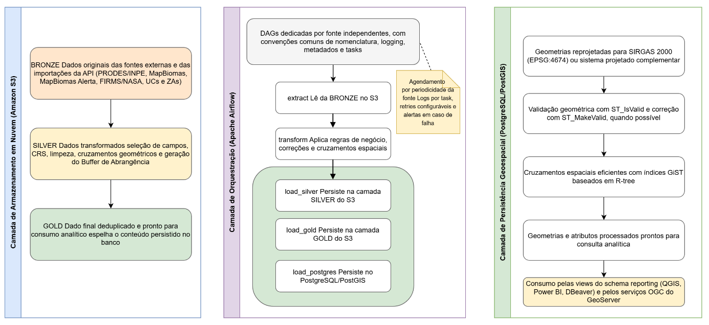
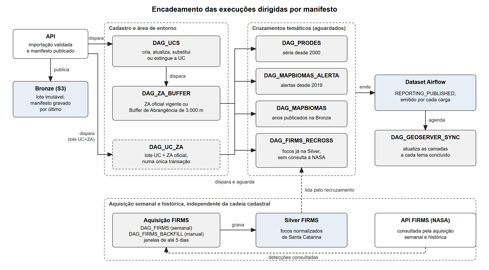
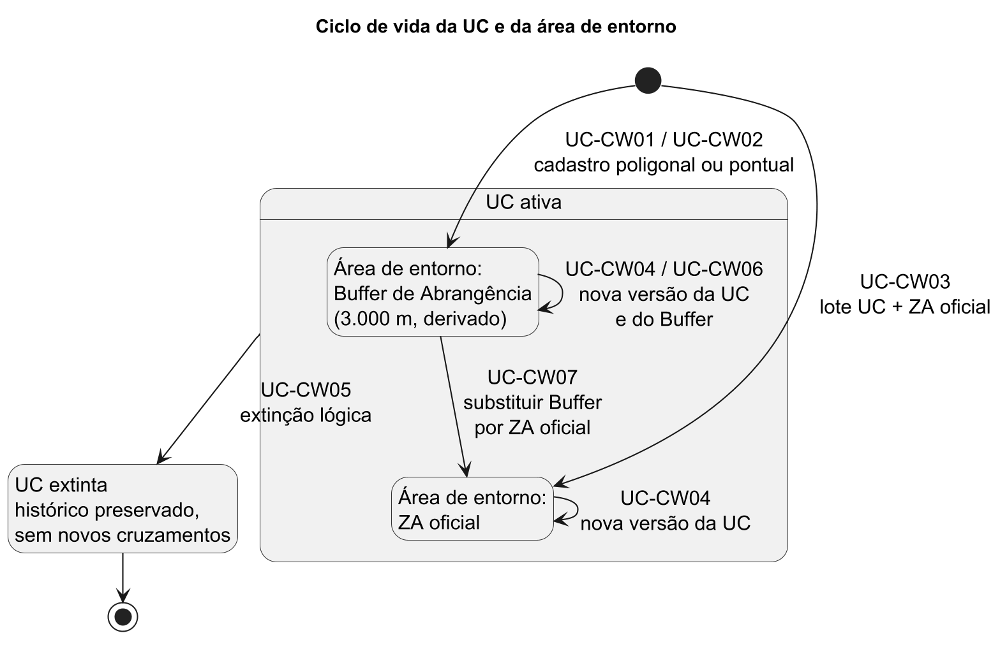
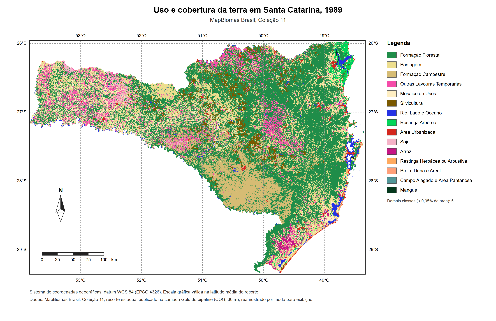
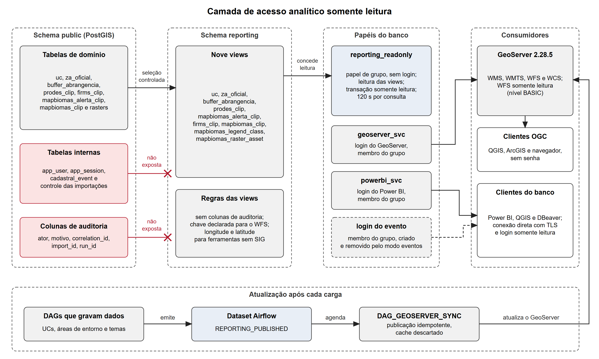
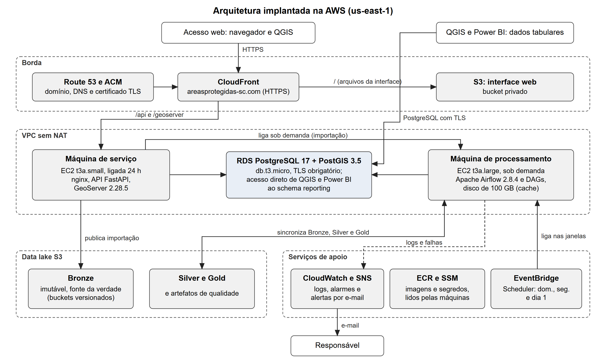

1. Levantar os requisitos relacionados às fontes de dados necessárias ao monitoramento de Unidades de Conservação, Zonas de Amortecimento e Buffers de Abrangência em Santa Catarina;
Universidade do Vale do Itajaí
Escola Politécnica · Ciência da Computação
Escola Politécnica · Ciência da Computação
Trabalho de Conclusão de Curso III · Produto tecnológico
Orquestração de um Pipeline End-to-End de Dados Geoespaciais
sobre Unidades de Conservação em Santa Catarina
AcadêmicoDiego Fonseca da Silva
OrientadorRafael Ballottin Martins
Local e dataItajaí (SC), novembro de 2026
Sumário
Roteiro da apresentação
Contexto e justificativa
As fontes são abertas, mas ainda não são evidência territorial
- 01
186 UCs em Santa Catarina
85 federais, 52 estaduais e 49 municipais, com entornos que exigem análise.
- 02
Bases generalistas e heterogêneas
PRODES, MapBiomas e FIRMS são nacionais ou globais, com formatos e frequências diferentes.
- 03
Demanda do projeto de extensão
"Unidades de Conservação é Preciso" (UNIVALI) precisa de dados atualizados, padronizados e consumíveis.

Justificativa: deslocar o esforço dos pesquisadores da preparação para a análise dos dados.
Problema
A preparação manual impede uma análise recorrente
Dificuldade de produzir, de forma consistente e recorrente, informação geoespacial confiável para o monitoramento de Unidades de Conservação e de seus entornos em Santa Catarina.
Seção 1.1 do relatório · Formulação do problema
Limites pontuais ou incompletos
Entornos sem ZA cartografada
Fontes heterogêneas
Etapas manuais
Baixa rastreabilidade
Consequência: cada nova demanda reconstrói o trabalho, com retrabalho e baixa reprodutibilidade.
Objetivos
Preparar, integrar e disponibilizar dados analisáveis
Objetivo geral
Desenvolver um pipeline automatizado para dados geoespaciais sobre Unidades de Conservação e seus entornos em Santa Catarina, com foco na preparação, integração e disponibilização de dados analisáveis para apoio às pesquisas nas áreas de interesse.
Objetivos específicos
2. Estruturar uma base geoespacial rastreável e reutilizável para os dados territoriais de interesse do projeto;
3. Automatizar a preparação de dados geoespaciais provenientes de múltiplas fontes heterogêneas cruzadas com as UCs e seus entornos;
4. Viabilizar a manutenção de informações espaciais estratégicas sobre essas áreas e seus entornos;
5. Desenvolver uma interface web para cadastro e atualização de geometrias vinculadas ao domínio analisado;
6. Disponibilizar dados geoespaciais preparados para consumo analítico, elaboração de relatórios técnicos e análise de risco.
Fonte: Diego Fonseca da Silva, TCC III, versão final, novembro de 2026.
Procedimentos
Do levantamento das fontes à validação na nuvem
1
Levantar
6 bases comparadas, 4 fontes escolhidas
2
Especificar
Regras de negócio, requisitos e modelo lógico
3
Implementar
Airflow, PostGIS, FastAPI, React e AWS
4
Validar
Testes, cenários ponta a ponta e inspeção do banco
Critério de conclusão: API, Airflow e PostgreSQL/PostGIS devem apresentar estados coerentes entre si.
As áreas do MapBiomas foram comparadas ao cálculo oficial do próprio MapBiomas no Google Earth Engine.
Produto desenvolvido
Uma cadeia integrada de cadastro, processamento e publicação

186
UCs cadastradas
federais, estaduais e municipais
4
fontes temáticas
vetor, raster e ponto
12
DAGs
no Apache Airflow
7
cenários
cadastrais versionados
Domínio territorial
ZA oficial e Buffer de Abrangência não são equivalentes
Entidade de referência
Unidade de Conservação
Identidade estável, geometria pontual ou poligonal e histórico de versões.
Delimitação oficial
ZA oficial
Entorno instituído. Tem precedência sempre que cadastrada.
Delimitação operacional
Buffer de Abrangência
3.000 m gerados quando não há ZA. Sem natureza jurídica.
EPSG:4674→
EPSG:31982→
Buffer 3.000 m→
EPSG:4674
Cada UC ativa tem um único entorno vigente. A troca encerra a vigência, sem apagar o histórico.
Orquestração end-to-end
A geometria confirmada precede os cruzamentos temáticos

- 1
Agenda da fonte. PRODES anual, Alerta e FIRMS semanais
- 2
Evento cadastral. Manifesto imutável na Bronze dispara o recálculo
A importação só termina após os quatro temas sobre a nova geometria.
Manutenção cadastral
Sete cenários preservam identidade e histórico

UC-CW01Cadastro poligonal e loteUC-CW02Cadastro pontual com BufferUC-CW03UC e ZA oficial juntasUC-CW04Atualização versionadaUC-CW05Extinção lógicaUC-CW06Ponto substituído por polígonoUC-CW07Buffer substituído por ZA
Resultados · Quatro fontes
Cada fonte preserva o seu significado
Leitura do banco na AWS em 01/11/2026, com as 186 UCs cadastradas.
Vetorial
PRODES
16.006
relações13.213 polígonos de 15 mapeamentos, 2004 a 2023, em 182 UCs
Vetorial
MapBiomas Alerta
312
relações267 alertas, 2019 a 2026, em 107 UCs
Raster
MapBiomas Uso
93.905
registros41 anos, 1985 a 2025, por área, ano e classe
Pontual
FIRMS
1.759
relações1.628 focos, 2000 a 2026, em 132 UCs
Alerta não equivale a infração confirmada. Foco de calor não equivale a área queimada.
Resultados · Verificação das áreas
As áreas reproduzem o cálculo do próprio MapBiomas

0,002%
diferença total de área
97,0%
das linhas com até 3 pixels de diferença
0,007 p.p.
discordância de composição
139 UCs sem parte fora do estado nem sobreposição, nos 41 anos. Não avalia a acurácia temática do MapBiomas.
Resultados · Consumo analítico
Um contrato somente leitura para análise externa

- 9
views no schema reporting
- 48
camadas no GeoServer: 7 vetoriais e 41 rasters
- 3
clientes validados: QGIS, DBeaver e Power BI
Resultados · Implantação pública
Serviço contínuo e processamento ligado só quando necessário

156
testes da API aprovados
114
testes do pipeline aprovados
71 min
da Bronze à publicação, uma UC nova
A reconstrução a partir da Bronze reproduziu as contagens e o hash SHA-256 dos rasters COG.
Resultados · Custo mensal
Custo conhecido, da ordem de dezenas de dólares
Proposta (TCC I)
≈ US$ 30
antes da implantação
Estimativa implantada
US$ 53,70
≈ R$ 295,35 por mês
Uso observado, out/2026
≈ US$ 51,20
US$ 1,61/dia + domínio
Processamento ligado 27,7 h no mês, abaixo das 50 h previstas. Valor apurado em um único ciclo de faturamento.
Análise crítica · Quadro 35
Os seis objetivos específicos apresentaram evidências de atendimento
Atendido
1. Requisitos
Contratos e recortes das 4 fontes
Atendido
2. Base rastreável
PostGIS versionado e reconstrução pela Bronze
Atendido
3. Automação
Vetor, raster e ponto em 12 DAGs
Atendido
4. Manutenção
7 cenários com histórico e transações
Atendido
5. Interface web
Formulários, autenticação e acompanhamento
Atendido
6. Consumo analítico
Reporting, GeoServer e clientes externos
Nas condições ensaiadas. Não equivale a validação ampla de usabilidade, segurança ou impacto.
Análise crítica · Seção 4.14
As evidências delimitam o alcance das conclusões
Limitações atuais
- 01
Avaliação com a equipe
Preliminar, com 6 participantes por videochamada e 3 no laboratório. A redução do retrabalho não foi medida.
- 02
Modelagem
Relações do PRODES, Alerta e FIRMS com o interior da UC não guardam a versão geométrica.
- 03
Operação e segurança
Ensaio com até 4 usuários simultâneos e sem teste de intrusão independente.
Trabalhos futuros
- 01
Ampliar a avaliação
Medir o tempo e o esforço de preparação dos dados com a equipe do projeto.
- 02
Evoluir a modelagem
Versão geométrica nas relações e restrições únicas no banco.
- 03
Fortalecer a operação
Troca automática NRT por SP no FIRMS, alta disponibilidade e custo em novos ciclos.
Considerações finais
A preparação deixa de ser refeita a cada estudo
Objetivo geral atendido nas condições de validação: 4 fontes integradas às 186 UCs e aos seus entornos, com cadastro versionado e acesso por ferramentas externas.
Decisão 1
Manifesto imutável
Entrada única que liga cada alteração aos derivados
Decisão 2
Idempotência
Em cada camada, da requisição às cargas
Decisão 3
Armazenar ≠ processar
Medallion no S3, processamento sob demanda
areasprotegidas-sc.com
Código aberto (MIT), reprodutível a partir da camada Bronze.
Obrigado
À banca examinadora pela leitura atenta, ao orientador Rafael Ballottin Martins e à equipe do projeto Unidades de Conservação é Preciso.
Fico à disposição para as perguntas